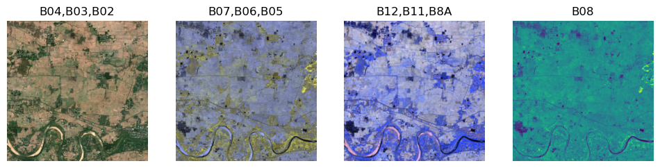
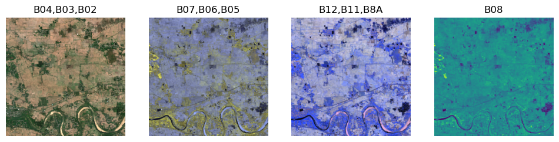
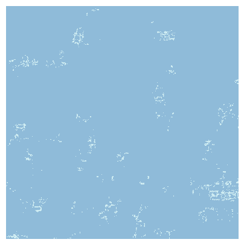
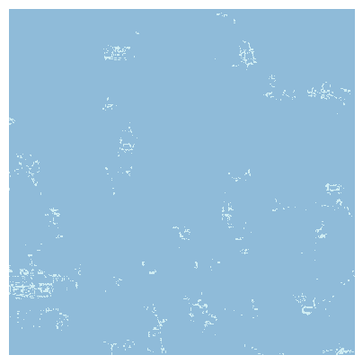
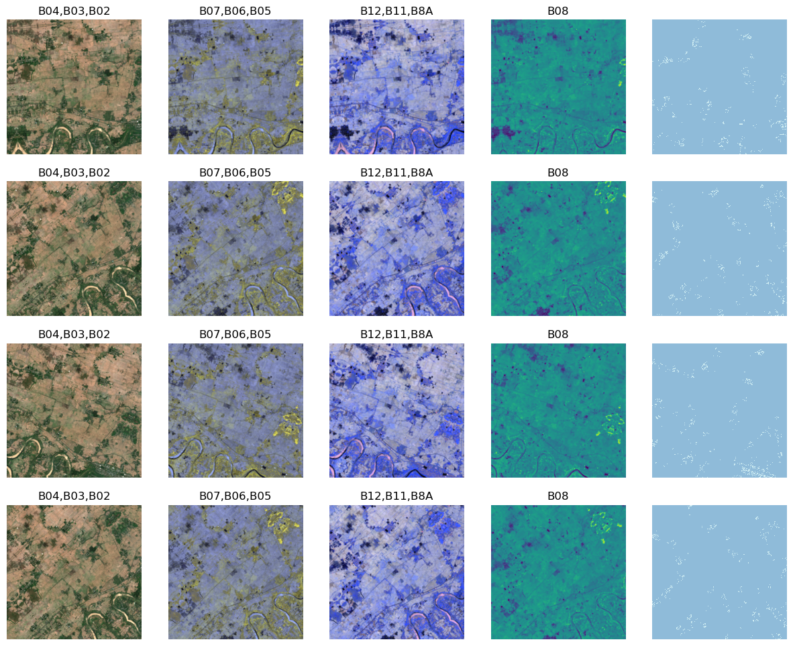
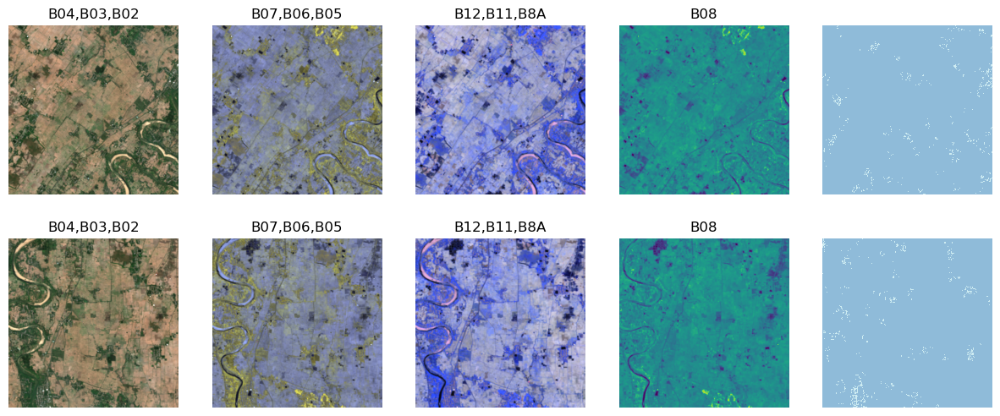

TestMSSAT = _create_ms_seg_alb_xfm_cls("TestMSSAT", None)Vision augmentation
Augmentation support for MSTensorImage and TensorMask
We then create an encoder that calls the albumentations transform, converting back and forth from the type/shape expected by albumentations.
Finally, a function that dynamically constructs the transform class with the specified split_idx (0 for training, 1 for validation, and None for testing)
Let’s see if this works. First we need to create a class TestMSSAT which will work outside the pipeline.
First create a transform using a simple albumentations transform
import albumentations as Atfm = TestMSSAT(A.HorizontalFlip(p=1))Next we load our sample img / msk tuple using the test fixture function.
from fastgs.test.fixture import *(img_org,msk_org) = get_11b_test_tuple()Let’s perform the transform
(img_tfm,msk_tfm) = tfm((img_org,msk_org))Here is the original image
img_org.show()[<AxesSubplot:title={'center':'B04,B03,B02'}>,
<AxesSubplot:title={'center':'B07,B06,B05'}>,
<AxesSubplot:title={'center':'B12,B11,B8A'}>,
<AxesSubplot:title={'center':'B08'}>]
and the transformed image
img_tfm.show()[<AxesSubplot:title={'center':'B04,B03,B02'}>,
<AxesSubplot:title={'center':'B07,B06,B05'}>,
<AxesSubplot:title={'center':'B12,B11,B8A'}>,
<AxesSubplot:title={'center':'B08'}>]
and the horizontal flip has worked as it is supposed to
We check the masks to see that the transform worked as advertised
msk_org.show()<AxesSubplot:>
msk_tfm.show()<AxesSubplot:>
Finally, we create the classes for training and validation
from fastgs.test.fixture import *
from fastgs.vision.data import *
from fastgs.multispectral import *fgs = get_11b_test_fgs(
MSAugment(
train_aug=A.ShiftScaleRotate(p=1),
valid_aug=A.Rotate(p=1)
)
)
dl = fgs.create_data_block().dataloaders(source=[66]*10,bs=8)dl.train.show_batch(max_n=4,mskovl=False)
dl.valid.show_batch(mskovl=False)